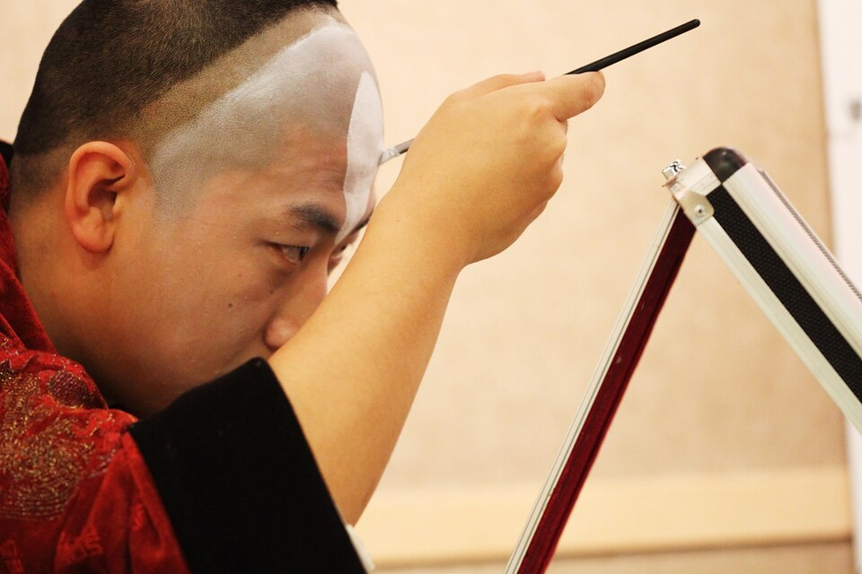
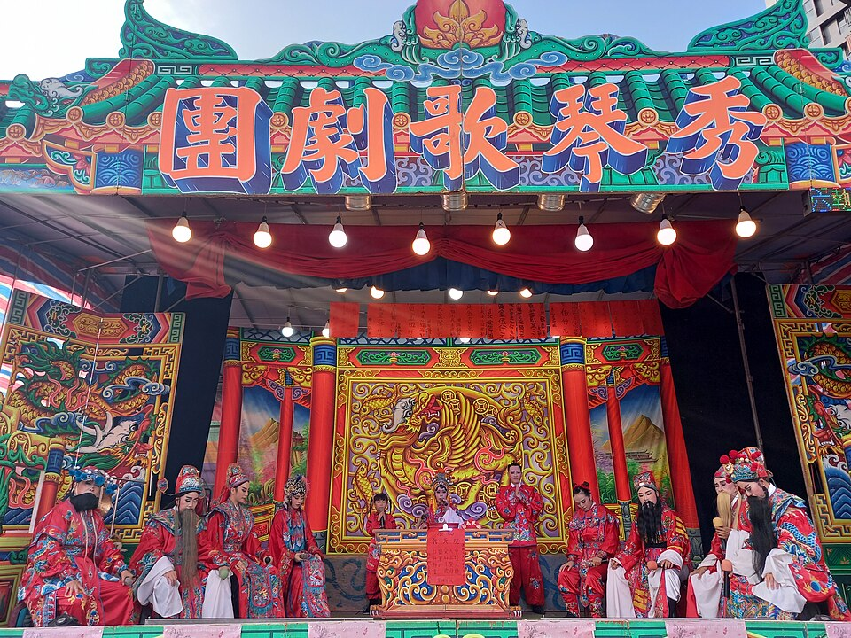
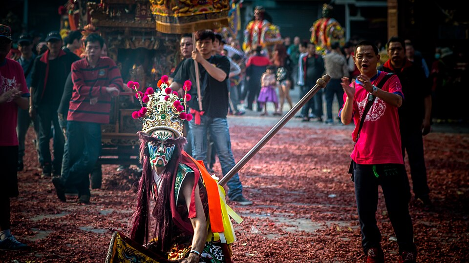
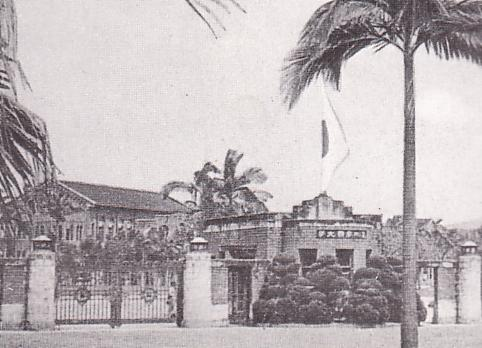
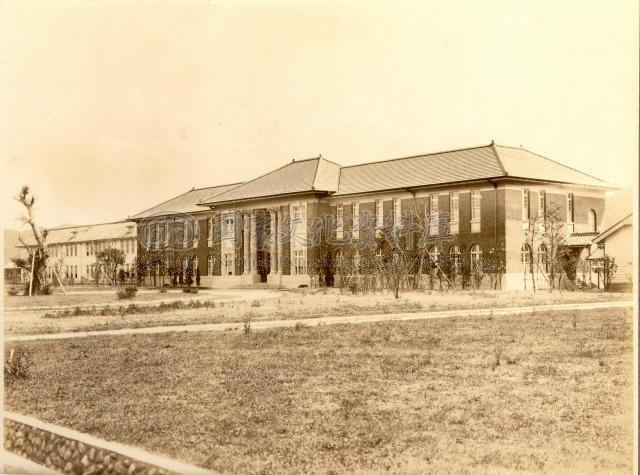
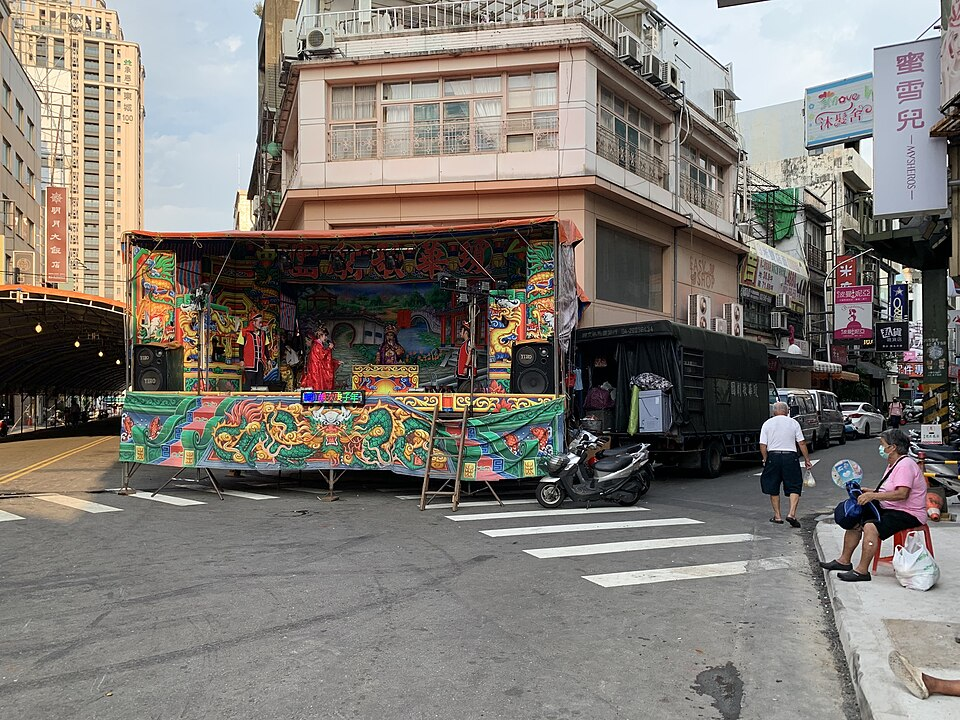
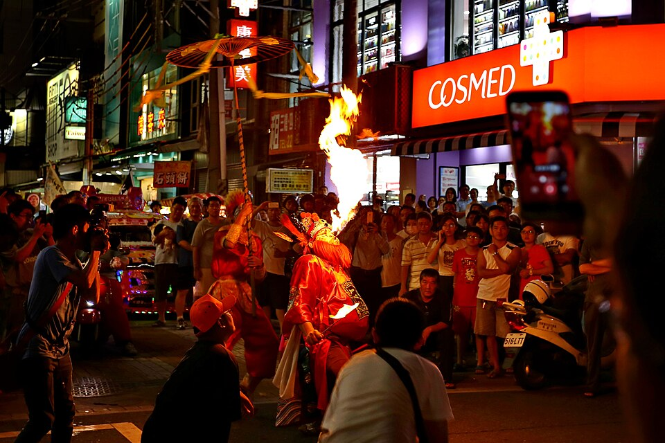

01
訊號干擾臉譜SIGNAL INTERFERENCE
一張臉譜當視覺中心，臉上框出幾個方塊，每個方塊用不同方式壞掉：像素化、網點、錯位、霧面玻璃。臉譜還認得出來，但已經被數位訊號改寫。手法最直接，也最容易延伸成整套 CIS。
框選區塊各自套用像素化、錯位、網點、霧面
百戲ERR_100
Noto Serif TC Black ＋ JetBrains Mono

勾臉網點
// FACE_PAINT.SYS 生 旦 淨 末 丑(ERR0R 百戲)LOADING 078/100 ………… 臺大藝術季

同一套手法用在戲台照片
八家將面譜配色
墨黑 #0B0B0B
粉底白 #F1ECE4
臉譜紅 #C8102E
訊號綠 #C6FF3D
臉譜原本的紅、黑、白不動，科技只加一個螢光綠，用在被干擾的方塊和資訊文字。
字體與圖案
- 主標粗明體，資訊文字用等寬字
- 圖案：方框、像素格、網點，可以壓在任何照片上
- 多張臉譜排成格狀，就是百戲的「百面」
延伸應用
- 貼紙：每張一個臉譜，干擾位置都不同
- 外套：背後大臉譜，局部像素刺繡
- IG 貼文：方框當固定版位
- 形象照框：人像套上半張像素臉譜
參考：Digital Beijing Opera Faces、Gordon Cheung 像素重排海報、京劇藝術國際海報雙年展
02
城南蜃樓MIRAGE
直接接藝術季主題。臺大早年的校園照片被水波和煙霧扭曲，跟現在的校園疊在一起，像海市蜃樓。戲曲以水袖、雲紋、煙霧字體出現。手法是液化與疊影，畫面夢幻，帶一點詭異。

舊校園照片 ＋ 水波 ＋ 另一棟舊建築疊影城南蜃樓
Noto Serif TC Black ＋ 煙霧濾鏡

臺北帝大農林專門部舊照水面虹彩
百年 · 幻影
配色
深夜藍 #141B2B
舊照棕 #E7C9A0
珍珠虹彩
朱 #C8402F
舊照的棕和深藍是底，虹彩只出現在水面和反光處。
字體與圖案
- 主標做成煙霧或水流狀的字
- 圖案：水波紋、雲紋，當底紋與分隔線
- 舊校門與新校門重疊，是最好記的畫面
延伸應用
- 扇子：扇面是蜃樓畫面
- 平安符：背面印舊校門剪影
- 舊照需向臺大校史館或圖書館特藏申請授權
參考：第 30 屆臺大藝術季「潮汐」、臺大校史館舊照
03
外台 LEDTEMPLE STAGE · LED
把戲曲放回台灣的廟口：野台戲、八家將、電子花車。科技用 LED 點陣、跑馬燈、霓虹燈管字來干擾畫面。台灣街頭本來就有「傳統加聲光」，賽博龐克不用借別的城市。顏色最飽和，最好做成周邊。
照片轉成 LED 點陣，掃描線滑過
百戲開台
NTU ART SEASON · 100 WORKS

廟前野台百戲 ✦ 百年 ✦ 臺大藝術季 ✦ 一百件作品 ✦ 文武場開打 ✦ 科技 × 人文 ✦

配色
廟紅 #C4161C
金 #FFD23F
花車粉 #FF3D7F
LED綠 #38FF8C
紅金是廟宇本色，粉綠是 LED 與霓虹的干擾色。四色都飽和，需要黑底撐住。
字體與圖案
- 主標做霓虹燈管字，副標用點陣字
- 圖案：LED 圓點網格、跑馬燈橫條
- 彩樓的對稱外框當所有版面的固定框
延伸應用
- 平安符、打火機：題材直接對得上
- truss 架：掛真的 LED 跑馬燈
- 關東旗、橫幅：沿用廟會旗幟版型
參考：洋蔥設計「金光舞台車閃閃嘉年華」、沈昭良攝影集《STAGE》、《微物銀河》布袋戲展
三個方向對照
| 方向 | 底圖 | 科技手法 | 調性 | 需要的素材 |
|---|---|---|---|---|
| 01 訊號干擾臉譜 | 臉譜 | 像素化、網點、錯位、霧面 | 銳利、街頭 | 臉譜插畫或照片 |
| 02 城南蜃樓 | 臺大新舊校園、水袖 | 液化、水波、疊影 | 夢幻、微詭異 | 臺大舊照授權 |
| 03 外台 LED | 野台戲、八家將 | LED 點陣、跑馬燈、霓虹 | 熱鬧、台味 | 廟會照片、燈管字 |
方向可以混用。例如 01 的方框干擾疊在 02 的蜃樓上，或用 03 的 LED 點陣當 01 方塊裡的效果。